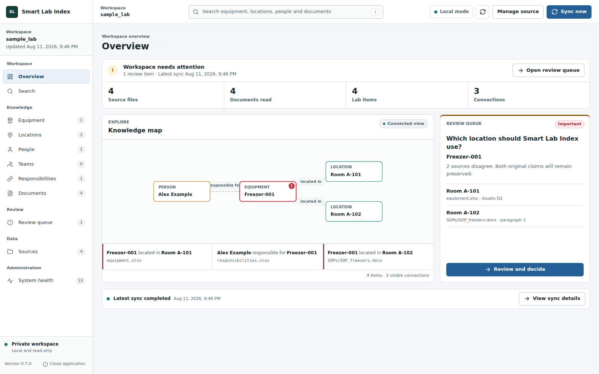

Discover
Scans a selected folder recursively and detects new, changed, unchanged, and deleted files.

Local laboratory knowledge index
Find what your lab has. See how it connects. Catch records that disagree.
Point it at a laboratory folder. It builds a browsable map of equipment, locations, people, responsibilities, and documents while keeping every result linked to its source.
Read-only sources Local by default Useful without AI
What it does
Smart Lab Index does not replace a LIMS, QMS, ELN, shared drive, or asset system. It creates the layer that lets people see those sources together and verify why a result exists.
Scans a selected folder recursively and detects new, changed, unchanged, and deleted files.
Parses PDF, Word, Excel, CSV, and text into a normalized, searchable structure.
Links assets, locations, people, responsibilities, and source evidence without requiring AI.
Surfaces contradictions and keeps both observations available for human review.
Evidence, not guesswork
The included synthetic lab has a spreadsheet that places Freezer-001 in Room A-101 and a procedure that places it in Room A-102. The index does not choose silently. It opens a conflict with both exact source locations.
Inspect the synthetic source filesOperator workspace
Browse equipment, locations, people, responsibilities, documents, sources, and findings that need review without a chat prompt.
Request-only beta
Applications open
The beta is for laboratory, research, quality, and facility teams willing to test a local index on synthetic, non-sensitive, or explicitly approved internal sample data. No documents are needed to apply.
Send only a short use-case description. Do not attach laboratory files or confidential data.
Document ingestion compatibility
Deterministic document-to-Excel tools and MCP endpoints are retained as ingestion capabilities. Smart Lab Index is the product layer above them. Read the compatibility documentation.